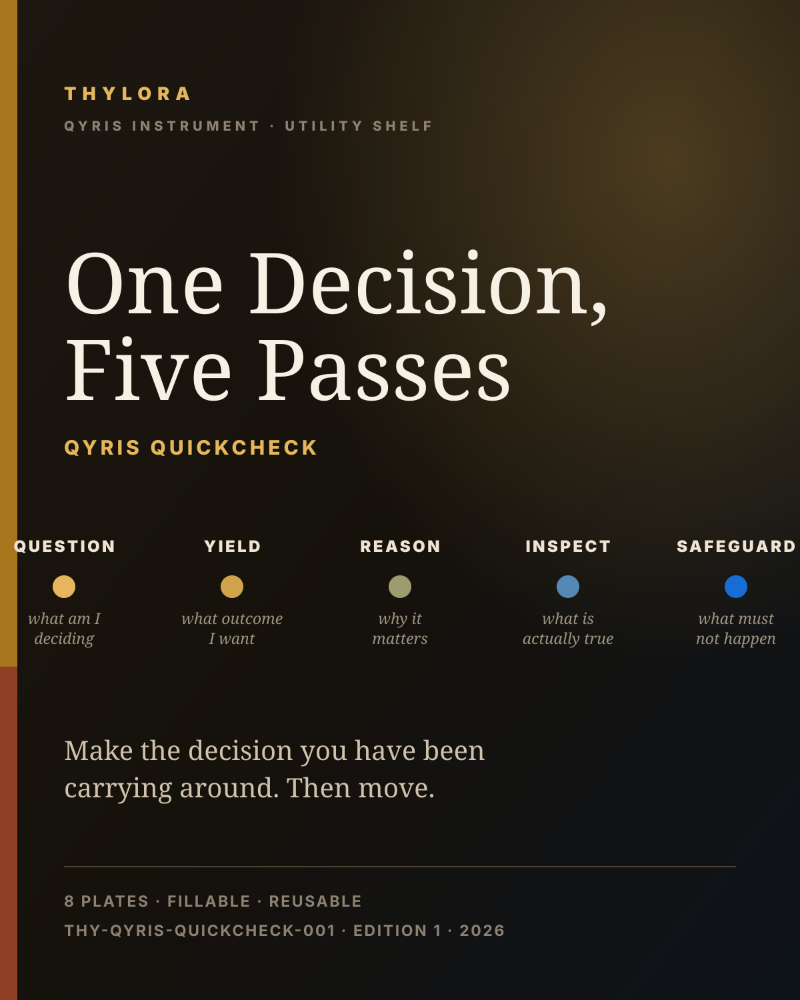

POSITION 1 · THY-QYRIS-QUICKCHECK-001
THYLORA QYRIS QuickCheck
One Decision, Five Passes
One decision. Five passes. Then you move. Question, Yield, Reason, Inspect, Safeguard — each pass with somewhere different to go, and the last one with the authority to stop you.
Open the artifact